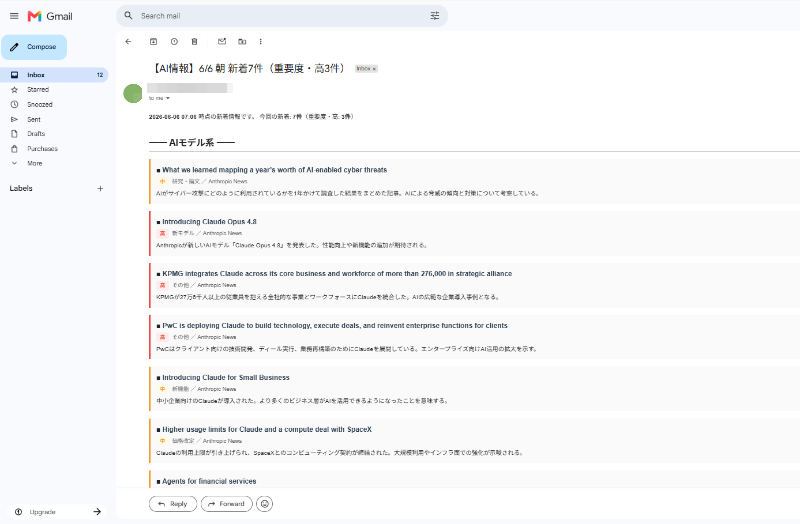

Tools
情報収集 / 自動化
情報収集エージェント
AIベンダーの新着情報をRSSで自動収集し、AIが重要なものだけを選別・要約してメールとスプレッドシートに届けます。

概要
実行頻度
1日3回、自動実行
対象情報
AIベンダーの新モデル・新機能・研究発表
出力先
Gmail通知 ＋ スプレッドシート記録
課題と解決
Before
OpenAI・Anthropic・Google DeepMindなど複数社のニュースを自分でチェックしていると、見落としや確認漏れが発生。情報収集だけで毎日時間を取られていた。
After
エージェントが自動でRSSを巡回し、重要な記事だけを選別・日本語で要約してメール通知。読む価値のある情報だけが手元に届く。
仕組み
01
複数のRSSフィードから新着記事を取得し、前回実行以降の差分のみを抽出する
02
タイトルと概要をAIに渡し、新モデル・新機能・価格改定・研究成果など重要な記事だけを選別。カテゴリと重要度を付与して1〜2行に要約する
03
選別結果をHTMLメールでGmailに送信しつつ、スプレッドシートに1行ずつ追記。サーバー上でcronにより1日3回自動実行される
背景
AIの動向は変化が速く、気づいたら重要なアップデートを見逃していることが何度もあった。「どうせ毎日チェックするなら自動化できるはず」と思い、自分のために作ったツール。情報源・選別ルール・使用AIモデルはすべて設定ファイルに分離してあるので、テーマを追加するだけで監視対象を広げられる。
使用技術
Python
Gemini API
Google Sheets API
Gmail SMTP
RSS / feedparser
cron（Hetzner VPS）
バイブコーディング